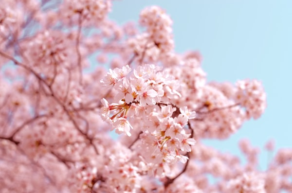

WRITINGS
文心
以文载道，以文化人
在这里，读懂二十四节气的文化底蕴
以文载道，以文化人
在这里，读懂二十四节气的文化底蕴

清明时节，杏花微雨，踏青祭祖。古人在这一天会做什么？踏青、插柳、放风筝、吃青团……让我们穿越时光，感受千年前的清明氛围。清明节是中国最重要的传统节日之一，融合了寒食节的禁火传统与上巳节的踏青习俗，形成了独具特色的文化内涵。
古人认为惊蛰的雷声能惊醒冬眠的虫兽，由此产生了祭雷神的习俗...

"不时不食"是中国饮食文化的核心理念，每个节气都有独特的食材...
 诗词赏析
诗词赏析
蒹葭苍苍，白露为霜。《诗经》中的蒹葭意象承载着古人对美好情感的向往...
 养生之道
养生之道
谷雨是春季最后一个节气，此时养生重在健脾祛湿、养肝护眼...
立夏是夏季的第一个节气，标志着自然万物进入蓬勃生长的高峰期...
 饮食文化
饮食文化
夏至阳气至极，宜清淡饮食，绿豆汤、酸梅汤、凉面都是消暑好选择...
在没有空调的古代，人们如何消暑？摇扇、乘凉、赏荷、饮冰……
 诗词赏析
诗词赏析
自古逢秋悲寂寥，我言秋日胜春朝。秋天在诗人笔下有着怎样的千般面貌？
秋分之日昼夜均分，养生重在润燥养肺，早睡早起，与自然同步...
 节气专栏
节气专栏
冬至大如年。在古代，冬至是比春节更隆重的节日，有"亚岁"之称...